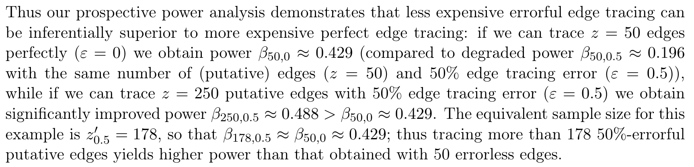
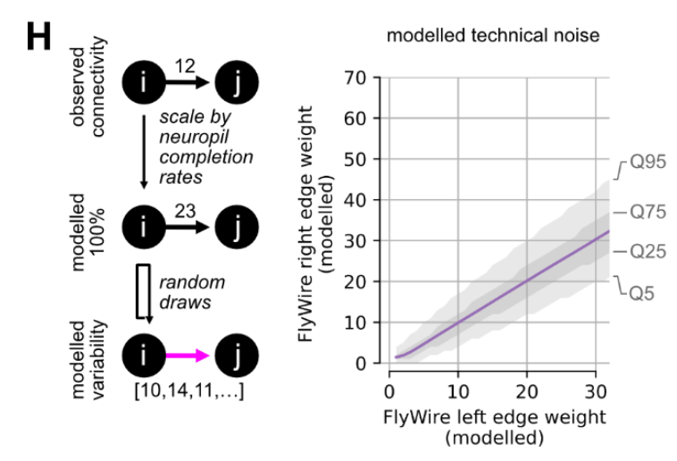

Introduction
Background
In the effort to understand the brain and its function, connectomics has proven a useful tool, and thus has undergone rapid technological development. Connectomes are now available for entire larval (Winding et al. 2023) and adult fly brains (Schlegel et al. 2023; Dorkenwald et al. 2023), large regions of mouse visual cortex (MICrONS Consortium et al. 2021), human cortex (Shapson-Coe et al. 2021), and many other areas and organisms. The largest of these connectome reconstructions now contain on the order of hundreds of thousands of neurons, and hundreds of millions of synapses. This unprecedented scale in connnectome reconstruction has been enabled by segmenting cells and annotating synapses with computer vision, followed by laborious human proofreading to correct false merges and extend incomplete pieces of neurons. This latter effort has been done, understandably, with the intent that we want to be able to trust the resulting reconstruction and believe that it is a true representation of the neuroanatomy and connectivity of the biological sample: thus, one should correct the results of an automated algorithm by this manual proofreading process.
Questions
However, since this manual proofreading is laborious (for instance, there were 2.7 million edits by 250 people in FlyWire over 4 years as of June 2023), it is worth reflecting on the scientific value of this effort. How consequential was this proofreading on the downstream measures we care about for analysis, such as connection probabilities between cell types? Are some connectivity features stable with proofreading, and others variable? Are certain edits more important than others, in terms of their impact on overal circuit structure? Next, we touch on how others have explored these and related questions in prior work, before motivating our own contributions here.
Prior work
In Priebe, Vogelstein, and Bock (2013), the authors ask whether one should, under a fixed “budget,” desire a small amount of highly proofread data or a larger amount of partially proofread, noisy data. They frame this question from the perspective of statistical hypothesis testing, asking which approach has higher power for distinguishing network parameters under a toy model. This work is an illustrative case for why, at least in theory, it is possible to actually prefer lots of unproofread data to a smaller amount of curated data. This is a prospect worth considering, especially in light of costly proofreading endeavors. However, this work was done in a toy model which was set up such that unproofread data had no bias, but merely represented a noisier version of a ground truth network. In reality, the unproofread networks we observe in connectomics likely have extreme bias in the way that errors are observed. For instance, one error in segmentation could lead to missing the entire primary axon of a neuron, effectively deleting all of that neurons outputs in one stroke. In our work, we will study similar questions using real connectome datasets and their edits rather than a toy model. This will allow us to examine similar questions but in this more realistic setting where proofreading likely changes the distribution of outputs from a neuron, say.

This question of technical variability and proofreading tangentially arose in Schlegel et al. (2023) as the authors examined a comparison of two fly connectomes: FlyWire and Hemibrain. The authors were interested in quantitative comparisons of connectivity between cell types that were cross-matched between the left and right hemispheres of the FlyWire connectome and the single hemisphere Hemibrain connectome. They found a general agreement in cell-type-to-cell-type connections both within (FlyWire-left:FlyWire-right) and between (FlyWire:Hemibrain) datasets; still, they wondered how much technical differences in reconstruction between these reconstructions could explain the differences they saw. The authors created synthetic datasets by subsampling data to estimated completion rates (on the basis of how many synapses were attached to both somas for a given neuropil). They found that, on average, 65% of the observed differences in cell-type-to-cell-type edge weights fell within a range one would expect from this simple model of technical noise. In other words, for many of these connections, one can not rule out that a difference that large came from differences in the technical details of connectome reconstruction, highlighting the importance of understanding this variability for comparisons of connectivity.

In Schneider-Mizell et al. (2016), the authors studied how features of neuroanatomy in the organism being studied relates to the robustness of connectivity measures. In Drosophila, many synapses input onto a downstream neurons “twigs,” microtubule-free neurites. Though the authors found that the majority of errors in reconstruction were at twigs, most connected neurons make use of more than one twig. Thus even if some twigs are missed, one is likely to recover most connections. This is an illustrative example of how considering neuroanatomy (twigs), technical aspects of the reconstruction (twigs being small and easily missable), and statistics (somewhat independent errors at different twig sites) can be informative about a connectivity estimand (chance of missing a connection completely).
Significance
There are several reasons why understanding the variability of connectivity with respect to proofreading is worthwhile and timely to consider for modern connectomics:
First, understanding the sensitivity of connectivity features to proofreading provides clues as to the technical variability associated with an imperfect reconstruction of an underlying biological network. This is worth knowing for its own sake, simply to understand how much to trust any particular aspect of a reconstruction. It is also important if one wanted to compare connectivity feature \(Y\) between two datasets. If \(Y\) varies drastically based on proofreading level, then it will be challenging to compare \(Y\) without ensuring proofreading was done in the exact same way for these two datasets or post-hoc correcting for any differences (see commentary above about Schlegel et al. (2023)).
Second, understanding this sensitivity is important for directing future proofreading efforts. Achieving a “perfect connectome” reconstruction is a comforting goal to strive for, but given finite time and resources, it is worthwhile to consider which efforts will actually affect downstream analysis we are interested in. Increasingly, a single connectomics datasets may be used for addressing many questions by directing proofreading toward particular sub-goals. It is worth understanding which questions can be answered “out-of-the-box” with no additional proofreading after the initial segmentation, and which will require further effort to get a trustworth answer.
Our contribution
In this work, we investigate these questions using large-scale reconstructions of mouse visual cortex as testbeds for these ideas. We do not aim to answer these questions holistically for all connectomics datasets and possible connectivity features; such an endeavor would be impossible since the answer is likely to depend greatly on the dataset and the question. Rather, we provide a set of guiding principles for which types of features are likely to be variable, and provide tools for other connectomicists to analyze these questions on their own data.
Outline
We start by clearly defining a set of connectivity features to consider for this work.
Then, we extract the complete set of proofreading edits performed on a highly curated column of cortical connectivity in a mouse’s visual cortex. We also map each synapse between neurons in this column to the edits it depends on, in the sense that those edits had to happen for a statement about soma \(i\) to soma \(j\) connectivity to be made.
Using this information, we then construct various “sloppy” networks, instantiated by replaying particular edits over the network and omitting others. These networks vary in their degree of completeness (i.e. some measure of how many of the edits were used) from the original segmentation all the way to the final proofread dataset. We also vary the “proofreader model” used to assign edits to “ON” or “OFF” in some ordering (i.e. whether edits are replayed uniformly at random, in the order they happened, in order of euclidean distance from the soma, etc.).
For these sloppy networks, we study how connectivity metrics vary as a function of these (real and imagined) proofreading endeavors. We also explore a ranking of individual edits from most to least important from the perspective of a particular connectivity measure, creating a scoring that could be used in future work to predict the location of key edits.